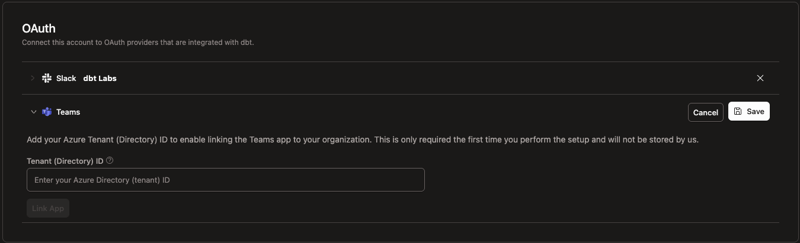

You’ve now used the core dbt CLI extensively. There’s a whole ecosystem around it — official products from dbt Labs, community packages, AI-era integrations. This lesson is a tour. None of these are required to ship great work, but knowing they exist is what separates “I use dbt” from “I work fluently with dbt.”
The hosted offering. Adds:
- A web IDE that runs dbt against connected warehouses (no local setup).
- Job scheduling with built-in cron + retry logic.
- A CI integration that runs dbt build --select state:modified+ on every PR.
- Auto-published documentation at <your-account>.dbt-cloud.com.
- The Semantic Layer (see below) as a paid feature.
When teams pick dbt Cloud over self-hosted: they don’t have ops capacity to run their own scheduler / CI runner, and they’re willing to pay per-developer for the convenience. When teams pick self-hosted: they already have GitHub Actions / Airflow / Dagster, and want to avoid lock-in.
A Rust-based reimplementation of the dbt parser. Fusion is meant to eventually replace the Python-based engine that comes with dbt-core. The pitch:
Fusion is in preview as of late 2025; the migration story (dbt-core → Fusion) is still maturing. dbt Labs ships an dbt-autofix script to bring projects up to Fusion-compatible state.
Pairs with Fusion. Adds:
- Inline SQL validation as you type (red squigglies before you save).
- Autocomplete on ref(), source(), column names, macros.
- Jump-to-definition on any ref / macro / source — Cmd+click to navigate.
- CTE preview — hover a CTE name to see its output schema.
- Column-level lineage in a side panel.
- Automated refactoring — rename a model, all references update across the project.
If your team writes dbt in VS Code, this is a non-negotiable upgrade. The Fusion + VS Code combination is the most modern way to develop dbt code as of 2025.
A way to define metrics (e.g. revenue, monthly_active_users) once in dbt and consume them consistently across BI tools. Built on the MetricFlow query engine.
metrics:
- name: total_revenue
label: Total Revenue
type: simple
type_params:
measure: order_amount
When the Semantic Layer is set up, BI tools can ask dbt for “monthly revenue grouped by region” and get back consistent SQL — no two dashboards diverge on the definition.
This is heavy to set up (requires defining entities, measures, metrics yaml) and currently a paid dbt Cloud feature. Worth knowing about; out of scope to learn hands-on in DuckDB.
A Model Context Protocol server that exposes your dbt project to AI agents (Claude, Cursor, VS Code) as a structured, queryable tool. With dbt MCP installed, an LLM can:
dbt build, dbt test, dbt run on your behalf.Setup involves installing uv (Astral’s tool runner), creating a .env with DBT_PROJECT_DIR and DBT_PATH, and pointing your IDE’s MCP config at uvx --env-file .env dbt-mcp. Once configured, the AI agent in your IDE can answer questions like “why is fct_orders failing?” by actually running dbt build --select fct_orders and reading the error output.
This is the most active area of dbt tooling in late 2025 — turning your project into something LLMs can operate on safely.
| Package | What it does | When to reach for it |
|---|---|---|
dbt_utils |
Generic SQL utilities (surrogate keys, expression tests, deduplication helpers) | You’ve already used it — installed in Stage 5 |
dbt_expectations |
Statistical / Great-Expectations-style tests | You’ve already used it — installed in Stage 6 |
audit_helper |
Compare a refactored model against a legacy version row-by-row | When porting legacy SQL to dbt and you need to prove the new version produces identical output |
dbt_project_evaluator |
Lints your project against dbt best practices (naming, materialization, test coverage) | Run it in CI; surface “you have models without tests” or “this model violates the staging→marts convention” |
dbt_artifacts |
Loads manifest.json / run_results.json / catalog.json into your warehouse as tables, so you can query your own metadata |
When you want a “models with the longest run times” or “tests with the most failures” dashboard |
elementary |
Anomaly detection + observability layer. Detects unexpected null spikes, row-count changes, freshness regressions | When data quality issues need to alert on Slack rather than just fail tests |
The pattern: install via packages.yml, run dbt deps, use the macros / sources the package exposes.
| Tool | What it does |
|---|---|
pre-commit-dbt |
Runs dbt parse and basic checks before every commit. Catches YAML errors before they hit CI. |
dbt-coverage |
Reports test coverage % across your project — “what fraction of models have at least one test?” |
dbt-checkpoint |
A bigger pre-commit suite — checks for missing descriptions, missing tests, references to deprecated macros. |
SQLFluff |
A pure-SQL linter that understands dbt’s Jinja templating. Standardize SQL formatting across the team. |
Most mature dbt repos have some combination of these wired into their PR-gate CI workflow. None are required; all are available the moment your team grows past 2–3 engineers.
A pattern for multi-project dbt — splitting one giant dbt project into several smaller ones that reference each other across boundaries. Built on three new YAML primitives:
# In a producer project
models:
- name: dim_customers
access: public # exposes this model to other projects
group: customer_data
config:
contract: # enforces column types at materialization time
enforced: true
columns:
- name: customer_id
data_type: bigint
constraints:
- type: primary_key
When a downstream project does {{ ref('producer_project', 'dim_customers') }}, dbt treats it as a cross-project reference, with contract enforcement guaranteeing the column types it expects.
dbt Mesh is the answer to “our dbt repo has 3000 models and 5 teams stepping on each other.” Most teams won’t need it for a long time — but knowing it exists is the difference between “I’ll just keep adding models to one repo forever” and “we should split this when it gets to ~500 models.”
You’ve now seen the core CLI workflow plus:
✅ Multi-target profiles
✅ The analysis-to-mart promotion pattern with meta: and tags:
✅ A tour of the broader ecosystem
You haven’t done hands-on work with:
❌ dbt Cloud (no exercise — needs an account)
❌ Fusion / VS Code extension (IDE-specific)
❌ MetricFlow / Semantic Layer (heavy setup, paid)
❌ dbt MCP (depends on your IDE)
❌ audit_helper (needs a legacy target to compare against)
❌ dbt Mesh (needs multiple dbt projects)
❌ Real CI/CD (needs GitHub Actions or equivalent)
That’s not a gap in the course — it’s that those topics are best learned on a real production project, where the trade-offs and constraints are concrete. Knowing they exist puts them on your radar for when you encounter them.
Press n for the course wrap-up.